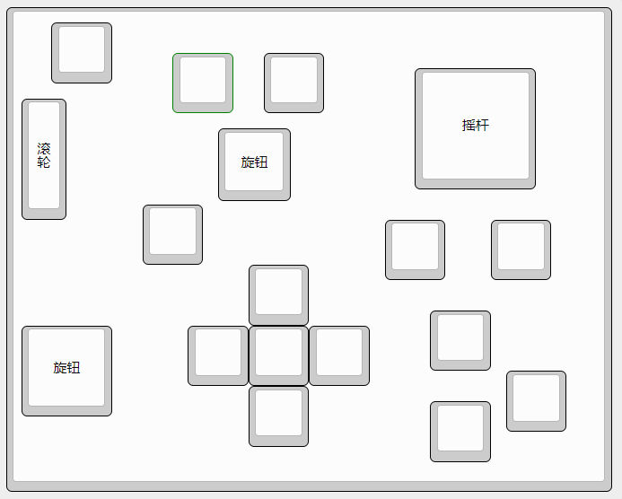
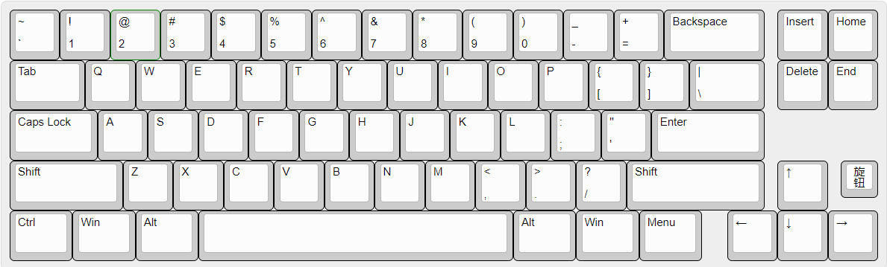

Vial-JL固件
| 下载内容 | 键位参考 | 固件说明 | 固件下载 |
|---|---|---|---|
| K42E1 | 一个40%配列的42键小键盘，左上角可以选装旋钮，支持Rgb轴灯。全部键、旋钮支持自定义，自动识别无需导入josn文件. | 有线单模 蓝牙双模 | |
| K42J1 | 一个40%配列的42键小键盘，左上角可以选装旋钮，支持Rgb轴灯。分裂空格可选装摇杆或按键(摇杆可映射按键或做指点杆使用，做指点杆时不可自定义)，全部键、旋钮支持自定义，自动识别无需导入josn文件. | 映射按键 指点杆 游戏摇杆 蓝牙双模 |
|
| F12 |  |
1摇杆+1旋钮+12键，支持Rgb轴灯一全部键、旋钮支持自定义，自动识别无需导入josn文件. | 有线单模 蓝牙双模 |
| K26E6 | 26键+4旋钮+2旋钮/滚轮+摇杆的设计用键盘，可选加Oled屏幕，全部键、旋钮支持自定义，自动识别无需导入josn文件. | 有线单模 | |
| JLbox |  | 复刻Tourbox的键盘，做了一些变更增加了按键摇杆，全部键、旋钮支持自定义，自动识别无需导入josn文件. | 映射按键 指点杆 游戏摇杆 |
| MPad | 数字区小键盘，左上角一个摇杆右上角一个旋钮。全部键、旋钮支持自定义，自动识别无需导入josn文件. | 有线单模 蓝牙双模 | |
| 左手Pad | 镜像数字区小键盘，右上角一个摇杆右上角一个旋钮。全部键、旋钮支持自定义，自动识别无需导入josn文件. | 有线单模 蓝牙双模 | |
| K45E1 | 一个40%配列的45键小键盘，左上角可以选装旋钮，支持Rgb轴灯。全部键、旋钮支持自定义，自动识别无需导入josn文件. | 有线单模 | |
| K68E1 |  | 田子68键盘，右下角方向键边上可选装一个旋钮。全部键、旋钮支持自定义，自动识别无需导入josn文件. | 有线单模 蓝牙双模 |
| K16E3T1 | 16键+3旋钮+1摇杆，全部键、旋钮支持自定义，自动识别无需导入josn文件. | 映射按键 指点杆 游戏摇杆 |
|
| JLE2 | 一个单摇杆或2旋钮小玩意儿，全部键、旋钮支持自定义，自动识别无需导入josn文件. | 映射按键 指点杆 游戏摇杆 |
|
| JLCV | 一个单摇杆3按键+3旋钮或按键的CV工程师专用键盘，全部键、旋钮支持自定义，自动识别无需导入josn文件. | 映射按键 指点杆 游戏摇杆 |
|
| 更多 |  |
更多固件、定制设备、选购新设备请联系客服索取！ | 更多惊喜 |